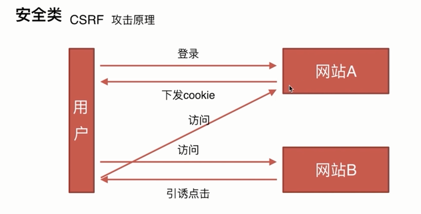
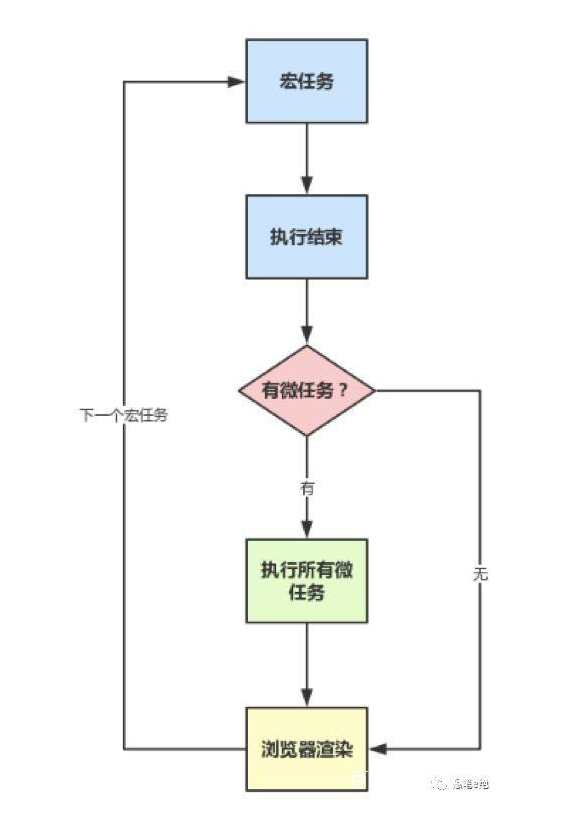
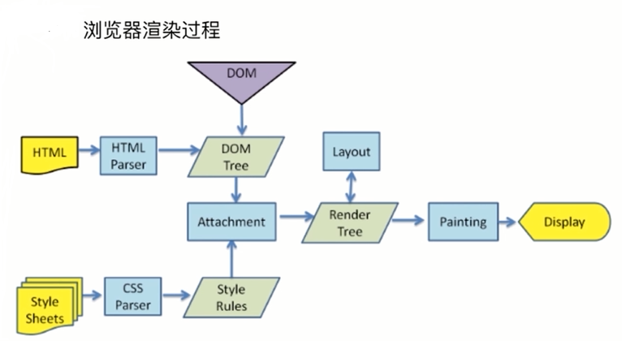
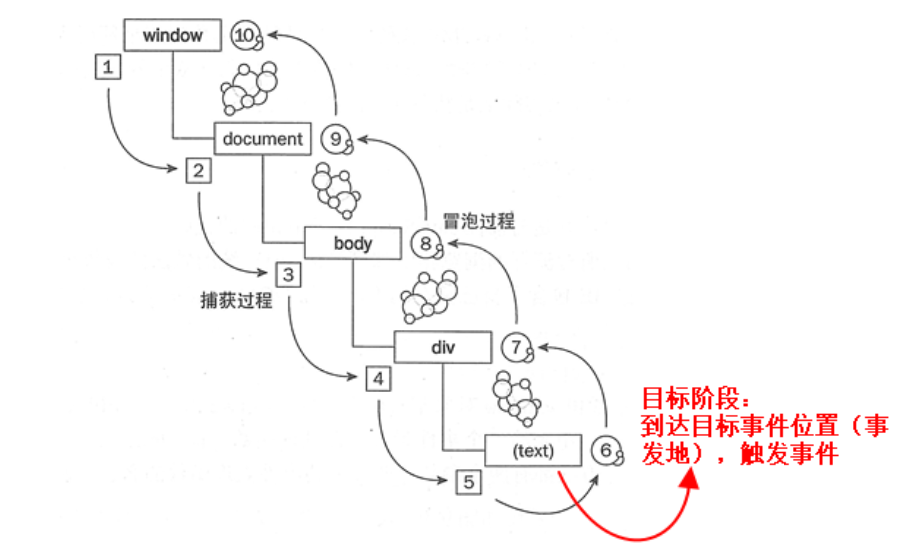

前端安全类
XSS攻击原理以及防御
XSS 全名: 跨网页脚本攻击 (Cross-sit Script)。XSS的攻击方式有两种： 反射型和存储型
1、反射性: 发出请求时，XSS代码出现在URL中，作为输入调教到服务器端，服务器端解析后响应，XSS代码随响应一起传回给浏览器，最后浏览器解析执行XSS代码。这个过程像一次反射、所以叫做反射性XSS
2、存储型： 存储型XSS和反射性XSS的差别仅在于，提交的代码会存储在服务端（数据库、内存、文件系统等），下次请求目标页面时不用再提交XSS代码
XSS防御措施:
1、编码;
对用户输入的特殊字符进行编码
如 < 符号可以转成 十进制 的 < 或者 十六进制的 <
2、过滤;
移除用户上传的DOM属性 如 onerror等
移除用户上传的style 节点、 script节点 、 iframe 节点等
3、校正; 避免直接对HTML Entity 解码 使用DOM Parse转换，矫正不匹配的DOM标签
/*如： 我们在评论框中输入*/
<textarea>
<script>alert(1)</script>
<img src="null" onerror="alert(document.cookie)" alt="">
</textarea>
/* 点击确认之后提交到服务端，服务端解析之后做出响应，将评论的内容响应到页面中,浏览器收到客户端的响应,将页面进行解析,遇到script标签就会执行，弹出1,这就是反射型攻击。存储型攻击就是将攻击内容存储到数据库中，以后每次访问都会解析执行攻击的代码。这样是有可能每个用户都能受到次攻击 */
CSRF攻击原理以及防御
CSFF 全名： 跨站请求伪造 （Cross-site request forgery）, 它的攻击原理就看下面这样图就能明白了
攻击原理:
从图上我们可以看出CSRF的攻击原理就是: 用户登录的A网站,A网站在接收到用户的登录请求后,验证通过后会给用户下发Cookie，也就是说下次用户进行其他请求操作的时候浏览器会自动带上Cookie就不用再次登录验证了。在等登录之后用户点击了B网站(钓鱼网站)。B网站编写了一个请求A网站的链接<img src="www.xxbank.com?bankId=10&moneyCount=1000><img>"；假如A网站是银行网站,如果用户没有退出A银行网站,访问B网站的时候,浏览器会发送伪造的img的src请求，并携带上Cookie,银行服务端在收到请求时验证Cookie,验证通过就会进行响应。这样的话你的money就会被转走了
CSRF攻击是通过利用浏览器来完成的。为了维持HTTP协议和网站的正常运行，浏览器不得不每次访问网站的时候都主动的携带上自己保存的相应网站的cookie。所以，攻击者所要做的，就是主动发出去一个对目标网站的请求就可以了。这就是该攻击名字的由来——跨站请求“伪造”。本来应该是用户自己主动的行为发出请求，却被攻击者伪造了
攻击条件：
1: 登录A网站没退出访问了B钓鱼网站
2：B网站伪造请求向A网站发送请求
CSRF防御
1、Token验证
用户登录网站，服务端生成一个Token，放在用户的Session
在页面表单附带上Token参数，为了不影响用户，可以设置type=hidden
用户提交请求时，表单中的这一参数会自动提交， 服务端验证表单中的Token是否与用户Session中的Token一致，一致为合法请求，不是则非法请求
每次提交，token值可以更新
2、验证 HTTP Referer 字段
根据 HTTP 协议，在 HTTP 头中有一个字段叫 Referer，它记录了该 HTTP 请求的来源地址。在通常情况下，访问一个安全受限页面的请求来自于同一个网站，比如需要访问 http://bank.example/withdraw?account=bob&amount=1000000&for=Mallory，用户必须先登陆 bank.example，然后通过点击页面上的按钮来触发转账事件。这时，该转帐请求的 Referer 值就会是转账按钮所在的页面的 URL，通常是以 bank.example 域名开头的地址。而如果黑客要对银行网站实施 CSRF 攻击，他只能在他自己的网站构造请求，当用户通过黑客的网站发送请求到银行时，该请求的 Referer 是指向黑客自己的网站。因此，要防御 CSRF 攻击，银行网站只需要对于每一个转账请求验证其 Referer 值，如果是以 bank.example 开头的域名，则说明该请求是来自银行网站自己的请求，是合法的。如果 Referer 是其他网站的话，则有可能是黑客的 CSRF 攻击，拒绝该请求。 但是referer字段是可以伪造的也可以控制请求的时候不发送referer字段，所以此方法并不安全
3、对重要的请求使用验证码
Js的运行机制类
如何理解Js是单线程的?
可以这么理解,单线程一次只能做一件事（原因就是js有能够操作dom的权利，如果js是多线程的话，那么同时执行多个程序。那么现在有2个进程,process1 process2,由于是多进程的JS,所以他们对同一个dom,同时进行操作process1 删除了该dom,而process2 编辑了该dom,同时下达2个矛盾的命令,浏览器究竟该如何执行呢?）
JS为什么需要异步?
如果JS中不存在异步,只能自上而下执行,如果上一行解析时间很长,那么下面的代码就会被阻塞。对于用户而言,阻塞就意味着"卡死",这样就导致了很差的用户体验
JS单线程又是如何实现异步的呢?
既然JS是单线程的,只能在一条线程上执行,又是如何实现的异步呢?是通过的事件循环(event loop),理解了event loop机制,就理解了JS的执行机制
任务队列
任务队列:可以任务是存放异步任务的回调结果的容器,任务队列又分为:宏任务队(macrotask)列和微任务队列(microtask);宏任务队列是存放宏任务回调结果的,那么微任务队列是存放微任务回调结果的github
宏任务和微任务
宏任务macrotask：
（事件队列中的每一个事件都是一个macrotask）
优先级： 主代码块 >setImmediate > MessageChannel > setTimeout / setInterval
比如：setImmediate指定的回调函数，总是排在setTimeout前面
微任务包括：
优先级：process.nextTick > Promise > MutationObserver
Event Loop
通过图片我们来分析下事件循环的过程
1、所有同步任务都在主线程上执行，形成一个执行栈
2、当执行的过程中碰到异步任务的时候，将异步任务挂起，当挂起的异步任务接受到响应时，将异步任务放到对应的任务队列中。直到执行栈为空时
3、一旦"执行栈"中的所有同步任务执行完毕，系统就会读取"任务队列"。先判断有没有微任务，有的话就执行所有的微任务，然后进行浏览器渲染。没有就执行一个宏任务
4、宏任务执行完之后在判断有没有微任务... 就这样重复上面的步骤
主线程从"任务队列"中读取事件，这个过程是循环不断的，所以整个的这种运行机制又称为Event Loop（事件循环）。
了解了事件循环和任务队列后，我们来做一下下面这道题
console.log('1');
setTimeout(function() {
console.log('2');
process.nextTick(function() {
console.log('3');
})
new Promise(function(resolve) {
console.log('4');
resolve();
}).then(function() {
console.log('5')
})
})
process.nextTick(function() {
console.log('6');
})
new Promise(function(resolve) {
console.log('7');
resolve();
}).then(function() {
console.log('8')
})
setTimeout(function() {
console.log('9');
process.nextTick(function() {
console.log('10');
})
new Promise(function(resolve) {
console.log('11');
resolve();
}).then(function() {
console.log('12')
})
})
分析： 上表是第一轮事件循环宏任务结束时各Event Queue的情况，此时已经输出了1和7。 我们发现了process1和then1两个微任务。 执行process1,输出6。 执行then1，输出8。 好了，第一轮事件循环正式结束，这一轮的结果是输出1，7，6，8。那么第二轮时间循环从setTimeout1宏任务开始： 首先输出2。接下来遇到了process.nextTick()，同样将其分发到微任务Event Queue中，记为process2。new Promise立即执行输出4，then也分发到微任务Event Queue中，记为then2。 宏任务Event Queue 微任务Event Queue setTimeout2 process2 then2 第二轮事件循环宏任务结束，我们发现有process2和then2两个微任务可以执行。 输出3。 输出5。 第二轮事件循环结束，第二轮输出2，4，3，5。 第三轮事件循环开始，此时只剩setTimeout2了，执行。 直接输出9。 将process.nextTick()分发到微任务Event Queue中。记为process3。 直接执行new Promise，输出11。 将then分发到微任务Event Queue中，记为then3。 宏任务Event Queue 微任务Event Queue process3 then3 第三轮事件循环宏任务执行结束，执行两个微任务process3和then3。 输出10。 输出12。 第三轮事件循环结束，第三轮输出9，11，10，12。 整段代码，共进行了三次事件循环，完整的输出为1，7，6，8，2，4，3，5，9，11，10，12。(请注意，node环境下的事件监听依赖libuv与前端环境不完全相同，输出顺序可能会有误差
原型链类
创建对象的几种方法?
1、字面量的方式创建： var obj= {name: 'zs'}
2、new Object()的方式创建： var obj= new Object({name: 'zs'})
3、构造函数方式创建： function Fun(){ this.name= 'zs'} var obj= new Fun()
4、通过 Object.create()的方式创建： var obj= Object.create({name:'zs'}) 注意：这种方式是通过原型继承的方式实现的
5、通过原型链的方式创建对象： function Fun(){} Fun.prototype= {name: 'zs'} var obj= new Fun()
6、通过组合的方式创建对象： function Fun(){ this.age= 18 } Fun.prototype= {name: 'zs'} var obj= new Fun()
instanceof的原理 ?
nstanceof 原理： 判断的是实例对象的__proto__ 属性和 构造函数的 prototype 属性指向的是不是同一个地址,如果没找到，就通过实例对象的__proto__ 属性的 __proto__ 属性 继续上上查找判断，如果找到就返回true,反正不到就继续喜爱那个上找，知道找到null
所以用instanceof判断不一定正确, 用constructor判断更加严谨（在不改变构造函数的原型指向的情况下）
new运算符的过程?
1：创建一个继承自 Func.prototype 的新对象； 即 var foo= Object.create(Func.prototype) 或者 foo= {} foo.__proto__ = Func.prototype
2：执行构造函数 Func ，执行的时候，相应的传参会被传入，同时上下文(this)会被指定为第一步创建的新实例； var returnValue= Fun.call(foo)
3：如果构造函数返回了一个“对象”,那么这个对象会取代步骤1中new出来的实例被返回。如果构造函数没有返回对象,那么new出来的结果为步骤1创建的对象。
// 创建一个new运算符的过程
function new1(Fun){
var foo= Object.create(Fun.prototype)
var returnValue= Fun.call(foo)
if(typeof returnValue === 'object'){
return returnValue
}else {
return foo
}
}
原型及原型链
什么是原型？
在JavaScript中，每当定义一个函数数据类型(普通函数、类)时候，都会天生自带一个prototype属性，这个属性指向函数的原型对象，并且这个属性是一个对象数据类型的值
什么是原型链？
每个对象都有一个__proto__(隐式原型)指向自己的prototype(构造函数的原型对象),而构造函数的原型对象也是对象,也有__proto__指向自己的构造函数的原型对象，就这样一层一层的指向。直到指向null。这样由__proto__连起来的线就叫做原型链
当我们访问一个对象的属性时，对象现在自身查找有没有这个属性，没有就通过__proto__属性找到构造函数的原型对象的属性看它有没有这个属性，有就访问，没有继续通过__proto__继续向上找,这就是通过原型链查找对象。中间只要找到就停止寻找，没找到直到原型为null则返回undefined
继承的几种方式
1、通过原型继承
function Parent2(name){
this.name= name
this.arr= [1,2,3]
}
Parent2.prototype.say= function(){}
function Child2(){
this.type= 'child1'
}
Child2.prototype= new Parent2('father2')
这种方式的原理就是： 通过改变子类的原型指向,指向父类的实例对象,继承了父实例对象内部的属性和方法和原型上的属性和方法
缺点： 子类继承父类的属性和方法都是相同的,当一个子实例对象改变父类的属性或方法，那么其他的子实例对象所继承父类的属性和方法也会受到影响发生改变
2、通过构造函数继承
function Parent1(name){
this.name= name
}
Parent1.prototype.say= function(){}
function Child1(){
Parent1.call(this,'parent1')
this.type= 'child1'
}
console.log(new Child1())
这种方式的原理就是： 通过将父类在子类中调用，并改变父类的this指向，将父类的this指向子类的实例对象,这样子类就拥有父类内部的属性和方法了
缺点： 子类不能继承父类原型对象上的属性和方法
3、组合继承
function Father3(name){
this.name= name
this.arr= [1,2,3]
}
Father3.prototype.say= function(){}
function Child3(){
Father3.call(this,'father3')
this.type= 'child1'
}
Child3.prototype= new Father3()
//其实这一步的目的值继承父类的原型对象
var s3= new Child3()
var s4= new Child3()
s3.arr.push(4)
console.log(s3.arr,s4.arr)
//[1,2,3,4], [1,2,3] 这样就不会出现其中一个子类修改了父类，其他的子类也发生了改变
console.log(Child3.prototype.constructor)
// Father3 这个是缺点2
这种方式的原理就是： 结合借助构造函数继承和原型链继承的方式，实现的继承，通过借助构造函数继承实现对父类内部属性/方法进行继承。原型链继承的方式，实现对父类的原型对象实现继承
缺点： 1: 父类的构造函数执行了两次，浪费性能。所以需要优化 2: 子类的原型对象的构造器指向了父类构造函数
优化方案1
function Father4(name){
this.name= name
this.arr= [1,2,3]
}
Father4.prototype.say= function(){}
function Child4(){
Father4.call(this,'father4')
this.type= 'child1'
}
Child4.prototype= Father4.prototype
//其实这一步的目的值继承父类的原型对象,
所以可以将Father4.prototype代替new Father3()
var s5= new Child4()
var s6= new Child4()
s5.arr.push(4)
console.log(s5.arr,s6.arr)
//[1,2,3,4], [1,2,3] 这样就不会出现其中一个子类修改了父类，
其他的子类也发生了改变
console.log(Child4.prototype.constructor)
// Father4
这里只解决了问题1,问题2、子类的原型对象的构造器指向了父类构造函数 依然存在
优化方案2
function Father5(name){
this.name= name
this.arr= [1,2,3]
}
Father5.prototype.say= function(){}
function Child5(){
Father5.call(this,'father5')
this.type= 'child1'
}
Child5.prototype= Object.create(Father5.prototype)
//这一步是创建一个对象，
//并将这个对象的__proto__指向Father5.prototype
var s7= new Child5()
var s8= new Child5()
s7.arr.push(4)
console.log(s7.arr,s8.arr)
//[1,2,3,4], [1,2,3] 这样就不会出现其中一个子类修改了父类，
其他的子类也发生了改变
Child5.prototype.constructor= Child5
//指定 Child5 原型对象的 constructor 为 Child5,
console.log(Child5.prototype.constructor) // Child5
console.log(Father5.prototype.constructor)// Father5
这样就完美解决了，如果Child5.prototype= Father5.prototype
不改变为Child5.prototype= Object.create(Father5.prototype)
然后 Child5.prototype.constructor= Child5 指定 Child5 原型对象的 constructor 为 Child5,可以吗？
答案是不行的，
因为Child5.prototype= Father5.prototype是子类的原型对象指向的是父类的原型对象，而Child5.prototype.constructor= Child5
相当于设置父类的constructor 为 Child5，所以访问到的 都是Child5 如：
console.log(Child5.prototype.constructor) // Child5
console.log(Father5.prototype.constructor)// Child5
所以必须按照上面的方式做
前端通信类
什么是同源策略及限制？
所谓同源策略，指的是浏览器对不同源的脚本或者文本的访问方式进行的限制。比如源a的js不能读取或设置引入的源b的元素属性。那么先定义下什么是同源，所谓同源，就是指两个页面具有相同的协议，主机（也常说域名），端口，三个要素缺一不可。
同源策略限制:
1、Cookie、LocalStorage 和 IndexDB 无法读取
2、DOM 无法获得
3、AJAX 请求不能发送
前后端是怎么进行通信的?
1、通过AJAX 受同源策略的限制
2、通过webSocket 不受同源策略的限制
3、通过CORS 支持跨域通信，也支持不跨域通信
跨域的几种方式
1、通过jsonp的方式
原理: 是利用script、img等标签的src属性，不受同源策略的限制;首先声明一个函数,函数接收数据。利用script的src属性向服务器发送请求（将函数名作为参数传过去），服务器收响应后，解析参数，将函数名和数据进行拼接，拼接成函数调用的字符串并返回给客户端'fn('+ data +')',客户端接受到响应之后，解析并执行,此时函数调用，上面定义的回调函数就能接收到服务端响应的参数了
jsonp跨域实现
//客户端
<script>
function jsp(data){
alert(JSON.stringify(data))
}
</script>
<script src="http://127.0.0.1/kuayu/jsonp/jsonp.php?callback=jsp"></script>
//服务端
<?php
echo $_GET['callback']."({name: 'zs',age: 18})"
?>
2、webSocket的方式 (本身不受同源策略的限制)
WebSocket 是 HTML5 开始提供的一种在单个 TCP 连接上进行全双工通讯的协议。它 使得客户端和服务器之间的数据交换变得更加简单，允许服务端主动向客户端推送数据。在 WebSocket API 中，浏览器和服务器只需要完成一次握手，两者之间就直接可以创建持久性的连接，并进行双向数据传输。在 WebSocket API 中，浏览器和服务器只需要做一个握手的动作，然后，浏览器和服务器之间就形成了一条快速通道。两者之间就直接可以数据互相传送。 现在，很多网站为了实现推送技术，所用的技术都是 Ajax 轮询。轮询是在特定的的时间间隔（如每1秒），由浏览器对服务器发出HTTP请求，然后由服务器返回最新的数据给客户端的浏览器。这种传统的模式带来很明显的缺点，即浏览器需要不断的向服务器发出请求，然而HTTP请求可能包含较长的头部，其中真正有效的数据可能只是很小的一部分，显然这样会浪费很多的带宽等资源。 HTML5 定义的 WebSocket 协议，能更好的节省服务器资源和带宽，并且能够更实时地进行通讯。
webSocket实现
//服务端
var ws = require("nodejs-websocket");
console.log("开始建立连接...")
var game1 = null,game2 = null , game1Ready = false , game2Ready = false;
var server = ws.createServer(function(conn){
conn.on("text", function (str) {
console.log("收到的信息为:"+str)
if(str==="game1"){
game1 = conn;
game1Ready = true;
conn.sendText("success");
}
if(str==="game2"){
game2 = conn;
game2Ready = true;
}
if(game1Ready&&game2Ready){
game2.sendText(str);
}
conn.sendText(str)
})
conn.on("close", function (code, reason) {
console.log("关闭连接")
});
conn.on("error", function (code, reason) {
console.log("异常关闭")
});
}).listen(8001)
console.log("WebSocket建立完毕")
//客户端
var mess = document.getElementById("mess");
if(window.WebSocket){
var ws = new WebSocket('ws://127.0.0.1:8001');
ws.onopen = function(e){
console.log("连接服务器成功");
ws.send("game1");
}
ws.onclose = function(e){
console.log("服务器关闭");
}
ws.onerror = function(){
console.log("连接出错");
}
ws.onmessage = function(e){
mess.innerHTML = "连接成功"
document.querySelector(".kuang").onclick = function(e){
var time = new Date();
ws.send(time + " game1点击了“" + e.target.innerHTML+"”");
}
}
}
3、CORS实现跨域
原理及流程:对于简单请求，浏览器直接发出CORS请求。具体来说，就是在头信息之中，增加一个Origin字段。上面的头信息中，Originc Origin: http://api.bob.com字段用来说明，本次请求来自哪个源（协议 + 域名 + 端口）。服务器根据这个值，决定是否同意这次请求。
如果Origin指定的源，不在许可范围内，服务器会返回一个正常的HTTP回应。浏览器发现，这个回应的头信息没有包含Access-Control-Allow-Origin字段（详见下文），就知道出错了，从而抛出一个错误，被XMLHttpRequest的onerror回调函数捕获。注意，这种错误无法通过状态码识别，因为HTTP回应的状态码有可能是200。如果Origin指定的域名在许可范围内，服务器返回的响应，会多出几个头信息字段。
Access-Control-Allow-Origin: http://api.bob.com
Access-Control-Allow-Credentials: true
Access-Control-Expose-Headers: FooBar
Content-Type: text/html; charset=utf-8
非简单请求是那种对服务器有特殊要求的请求，比如请求方法是PUT或DELETE，或者Content-Type字段的类型是application/json。
非简单请求的CORS请求，会在正式通信之前，增加一次HTTP查询请求，称为"预检"请求（preflight）。
浏览器先询问服务器，当前网页所在的域名是否在服务器的许可名单之中，以及可以使用哪些HTTP动词和头信息字段。只有得到肯定答复，浏览器才会发出正式的XMLHttpRequest请求，否则就报错。
请求的话就是正常的ajax;
请求只需要在服务端设置response.setHeader("Access-Control-Allow-Origin", "*");即可
4、postMessage跨域请求
postMessage()方法允许来自不同源的脚本采用异步方式进行有限的通信，可以实现跨文本档、多窗口、跨域消息传递
//发送端
var receiver = document.getElementById('receiver').contentWindow;
var btn = document.getElementById('send');
btn.addEventListener('click', function (e) {
e.preventDefault();
var val = document.getElementById('text').value;
receiver.postMessage("Hello "+val+"！", "http://res.42du.cn");
});
// 接收端
window.addEventListener("message", receiveMessage, false);
function receiveMessage(event){
if (event.origin !== "http://www.42du.cn")
return;
}
5、hash实现跨域
原理：父页面向子页面发送数据是通过改变iframe标签的 hash值,然后让子页面 通过window.onhashchang 事件来监听hash的值改变，然后获取hash传输的数据 子页面向父页面传值： 父页面定义一个回调函数，子页面的 window.parent 获取父页面的window对象，通过window.parent.回调名称(数据) 来传值 如： window.parent.cz('我是子页面传递过来的值') 当然也可以window.parent.document 获取父元素的document对象，进行操作
<h1>这是hash1页面</h1>
<button id= btn>向hash2发送数据</button>
<iframe src="./hash2.html" frameborder="0" id= "iframe"></iframe>
<script>
var btn= document.getElementById('btn')
var iframe= document.getElementById('iframe')
btn.onclick= function(){
iframe.src= iframe.src + '#name=zs&age=18&like=睡觉'
console.log('fasong')
}
// 父页面向子页面发送数据是通过改变iframe标签的 hash值,然后让子页面 通过window.onhashchang 事件来监听hash的值改变，然后获取hash传输的数据
function cz(data){
console.log(data)
}
/* 子页面向父页面传值： 父页面定义一个回调函数，子页面的 window.parent 获取父页面的window对象，通过window.parent.回调名称(数据)
来传值 如： window.parent.cz('我是子页面传递过来的值')
*/
<script>
<section>
<h1>这是hash2页面</h1>
<button>子页面向父页面传值</button>
<p></p>
</section>
<script>
var h1= document.querySelector('h1')
var p= document.querySelector('p')
var button= document.querySelector('button')
window.onhashchange= function(e){
console.log(e)
h1.innerHTML= '接受到数据了'
p.innerHTML= e.newURL
}
button.onclick= function(){
window.parent.cz('我是子页面hash2穿过来的值')
}
var fatherH1= window.parent.document.querySelector('h1')
console.log(fatherH1.innerHTML)
/* 子页面向父页面传值： 父页面定义一个回调函数，子页面的 window.parent 获取父页面的window对象，通过window.parent.回调名称(数据)
来传值 如： window.parent.cz('我是子页面传递过来的值')
当然也可以window.parent.document 获取父元素的document对象，进行操作
*/
<script>
渲染机制类
什么是DOCTYPE及作用?
DOCTYPE是用来声明文档类型和DTD规范的，一个用途是文件的合法性验证。如果文件代码不合法，那么浏览器解析是会出一些差错。也就是说 DOCTYPE就是告诉浏览器什么是DTD的，而DTD就是告诉浏览器我什么文档类型，浏览器根据DTD来决定自己用什么引擎来解析渲染它
HTML4.01 分为两个版本，一个严格模式，一个传统模式
严格模式： 该DTD包含所有的HTML元素和属性，但不包括展示性和废弃的元素 如（font)
传统模式: 该DTD包含所有的HTML元素和属性，包括展示性和废弃的元素 如（font)
浏览器的渲染过程
渲染流程
解析html以构建dom树 -> 构建render树 -> 布局render树 -> 绘制render树
DOM Tree：浏览器将HTML解析成树形的数据结构。
CSS Rule Tree：浏览器将CSS解析成树形的数据结构。
Render Tree: DOM和CSSOM合并后生成Render Tree。
layout: 有了Render Tree，浏览器已经能知道网页中有哪些节点、各个节点的CSS定义以及他们的从属关系，从而去计算出每个节点在屏幕中的位置。
painting: 按照算出来的规则，通过显卡，把内容画到屏幕上。
reflow（回流）：当浏览器发现某个部分发生了点变化影响了布局，需要倒回去重新渲染，内行称这个回退的过程叫 reflow。reflow 会从 html 这个 root frame 开始递归往下，依次计算所有的结点几何尺寸和位置。reflow 几乎是无法避免的。现在界面上流行的一些效果，比如树状目录的折叠、展开（实质上是元素的显 示与隐藏）等，都将引起浏览器的 reflow。鼠标滑过、点击……只要这些行为引起了页面上某些元素的占位面积、定位方式、边距等属性的变化，都会引起它内部、周围甚至整个页面的重新渲 染。通常我们都无法预估浏览器到底会 reflow 哪一部分的代码，它们都彼此相互影响着。
repaint（重绘）：改变某个元素的背景色、文字颜色、边框颜色等等不影响它周围或内部布局的属性时，屏幕的一部分要重画，但是元素的几何尺寸没有变。
注意：(1)display:none 的节点不会被加入Render Tree，而visibility: hidden 则会，所以，如果某个节点最开始是不显示的，设为display:none是更优的。一些不可见的标签也是不会在Render Tree中的,如script、link 、meta标签等
(2)display:none 会触发 reflow，而 visibility:hidden 只会触发 repaint，因为没有发现位置变化。
(3)有些情况下，比如修改了元素的样式，浏览器并不会立刻reflow 或 repaint 一次，而是会把这样的操作积攒一批，然后做一次 reflow，这又叫异步 reflow 或增量异步 reflow。但是在有些情况下，比如resize 窗口，改变了页面默认的字体等。对于这些操作，浏览器会马上进行 reflow
什么情况下会触发reflow(重排)
触发Reflow 1、当你增加、删除、修改DOM节点时，会导致ReFlow或Repaint 2、当你移动DOM的位置，或者设置动画时 3、当年你修改CSS样式的时候 4、当你Resize窗口的时候（移动端没这个问题） 5、当你修改网页的默认字体的时候
什么情况下会触发repaint(重绘)
修改元素的color background-color visibility: hidden; (只要页面的内容不一样了，肯定触发Repaint)
DOM事件类
DOM事件的级别
DOM0 有两种绑定事件的方式：1、 在html标签上绑定事件；2、通过element.onclick= function(){}
DOM2 通过 element.addeventListener('keyup',function(){})的方式绑定
DOM3 和DOM2差不过，只是增加了事件的类型
DOM事件模型
冒泡和捕获
DOM事件流
事件从以捕获的形式从 window 到达 目标阶段。触发目标，然后再以冒泡的形式从目标阶段传向window对象
DOM事件捕获的具体过程
window对象接收到事件 => document => html => body => 再根据html的结构一层一层的向下传递 => 目标元素
冒泡和捕获
Event对象的常见应用
event.preventDefault() //阻止默认事件
event.stopPropagarion() //阻止冒泡
event.stopImmediatePropagation()
event.currentTarget // 绑定对象的元素（在事件委托的时候有用）
event.target // 触发事件的元素
自定义事件
var eve= new Event('custome') // 定义一个事件
ev.addEventListener('custome',function(){}) //注册事件
ev.dispatchEvent(eve) //触发事件
但是 new Event() 只能创建一个时间对象，不能传参，我们可以用new CustomEvent() 的第二个参数传参
原型链类
原型及原型链
由于接口做了缓存处理 ( 缓存 2 分钟,不缓存数据极容易引起网易服务器高频ip错误 , 可在 app.js 设置 , 可能会导致登陆后获取不 到 cookie), 相同的 url 会在两分钟内只向网易服务器发一次请求 , 如果遇到不需要缓 存结果的接口 , 可在请求 url 后面加一个时间戳参数使 url 不同 , 例子 /simi/playlist?id=347230×tamp=1503019930000github
console.log(1)
console.log(2)
console.log(2)
console.log(2)
document.querySelector('*')
原型链类
原型及原型链
由于接口做了缓存处理 ( 缓存 2 分钟,不缓存数据极容易引起网易服务器高频ip错误 , 可在 app.js 设置 , 可能会导致登陆后获取不 到 cookie), 相同的 url 会在两分钟内只向网易服务器发一次请求 , 如果遇到不需要缓 存结果的接口 , 可在请求 url 后面加一个时间戳参数使 url 不同 , 例子 /simi/playlist?id=347230×tamp=1503019930000github
console.log(1)
console.log(2)
console.log(2)
console.log(2)
document.querySelector('*')
原型链类
原型及原型链
由于接口做了缓存处理 ( 缓存 2 分钟,不缓存数据极容易引起网易服务器高频ip错误 , 可在 app.js 设置 , 可能会导致登陆后获取不 到 cookie), 相同的 url 会在两分钟内只向网易服务器发一次请求 , 如果遇到不需要缓 存结果的接口 , 可在请求 url 后面加一个时间戳参数使 url 不同 , 例子 /simi/playlist?id=347230×tamp=1503019930000github
console.log(1)
console.log(2)
console.log(2)
console.log(2)
document.querySelector('*')
原型链类
原型及原型链
由于接口做了缓存处理 ( 缓存 2 分钟,不缓存数据极容易引起网易服务器高频ip错误 , 可在 app.js 设置 , 可能会导致登陆后获取不 到 cookie), 相同的 url 会在两分钟内只向网易服务器发一次请求 , 如果遇到不需要缓 存结果的接口 , 可在请求 url 后面加一个时间戳参数使 url 不同 , 例子 /simi/playlist?id=347230×tamp=1503019930000github
console.log(1)
console.log(2)
console.log(2)
console.log(2)
document.querySelector('*')
原型链类
原型及原型链
由于接口做了缓存处理 ( 缓存 2 分钟,不缓存数据极容易引起网易服务器高频ip错误 , 可在 app.js 设置 , 可能会导致登陆后获取不 到 cookie), 相同的 url 会在两分钟内只向网易服务器发一次请求 , 如果遇到不需要缓 存结果的接口 , 可在请求 url 后面加一个时间戳参数使 url 不同 , 例子 /simi/playlist?id=347230×tamp=1503019930000github
console.log(1)
console.log(2)
console.log(2)
console.log(2)
document.querySelector('*')
原型链类
原型及原型链
由于接口做了缓存处理 ( 缓存 2 分钟,不缓存数据极容易引起网易服务器高频ip错误 , 可在 app.js 设置 , 可能会导致登陆后获取不 到 cookie), 相同的 url 会在两分钟内只向网易服务器发一次请求 , 如果遇到不需要缓 存结果的接口 , 可在请求 url 后面加一个时间戳参数使 url 不同 , 例子 /simi/playlist?id=347230×tamp=1503019930000github
console.log(1)
console.log(2)
console.log(2)
console.log(2)
document.querySelector('*')
原型链类
原型及原型链
由于接口做了缓存处理 ( 缓存 2 分钟,不缓存数据极容易引起网易服务器高频ip错误 , 可在 app.js 设置 , 可能会导致登陆后获取不 到 cookie), 相同的 url 会在两分钟内只向网易服务器发一次请求 , 如果遇到不需要缓 存结果的接口 , 可在请求 url 后面加一个时间戳参数使 url 不同 , 例子 /simi/playlist?id=347230×tamp=1503019930000github
console.log(1)
console.log(2)
console.log(2)
console.log(2)
document.querySelector('*')
原型链类
原型及原型链
由于接口做了缓存处理 ( 缓存 2 分钟,不缓存数据极容易引起网易服务器高频ip错误 , 可在 app.js 设置 , 可能会导致登陆后获取不 到 cookie), 相同的 url 会在两分钟内只向网易服务器发一次请求 , 如果遇到不需要缓 存结果的接口 , 可在请求 url 后面加一个时间戳参数使 url 不同 , 例子 /simi/playlist?id=347230×tamp=1503019930000github
console.log(1)
console.log(2)
console.log(2)
console.log(2)
document.querySelector('*')
原型链类
原型及原型链
由于接口做了缓存处理 ( 缓存 2 分钟,不缓存数据极容易引起网易服务器高频ip错误 , 可在 app.js 设置 , 可能会导致登陆后获取不 到 cookie), 相同的 url 会在两分钟内只向网易服务器发一次请求 , 如果遇到不需要缓 存结果的接口 , 可在请求 url 后面加一个时间戳参数使 url 不同 , 例子 /simi/playlist?id=347230×tamp=1503019930000github
console.log(1)
console.log(2)
console.log(2)
console.log(2)
document.querySelector('*')
原型链类
原型及原型链
由于接口做了缓存处理 ( 缓存 2 分钟,不缓存数据极容易引起网易服务器高频ip错误 , 可在 app.js 设置 , 可能会导致登陆后获取不 到 cookie), 相同的 url 会在两分钟内只向网易服务器发一次请求 , 如果遇到不需要缓 存结果的接口 , 可在请求 url 后面加一个时间戳参数使 url 不同 , 例子 /simi/playlist?id=347230×tamp=1503019930000github
console.log(1)
console.log(2)
console.log(2)
console.log(2)
document.querySelector('*')
原型链类
原型及原型链
由于接口做了缓存处理 ( 缓存 2 分钟,不缓存数据极容易引起网易服务器高频ip错误 , 可在 app.js 设置 , 可能会导致登陆后获取不 到 cookie), 相同的 url 会在两分钟内只向网易服务器发一次请求 , 如果遇到不需要缓 存结果的接口 , 可在请求 url 后面加一个时间戳参数使 url 不同 , 例子 /simi/playlist?id=347230×tamp=1503019930000github
console.log(1)
console.log(2)
console.log(2)
console.log(2)
document.querySelector('*')
原型链类
原型及原型链
由于接口做了缓存处理 ( 缓存 2 分钟,不缓存数据极容易引起网易服务器高频ip错误 , 可在 app.js 设置 , 可能会导致登陆后获取不 到 cookie), 相同的 url 会在两分钟内只向网易服务器发一次请求 , 如果遇到不需要缓 存结果的接口 , 可在请求 url 后面加一个时间戳参数使 url 不同 , 例子 /simi/playlist?id=347230×tamp=1503019930000github
console.log(1)
console.log(2)
console.log(2)
console.log(2)
document.querySelector('*')